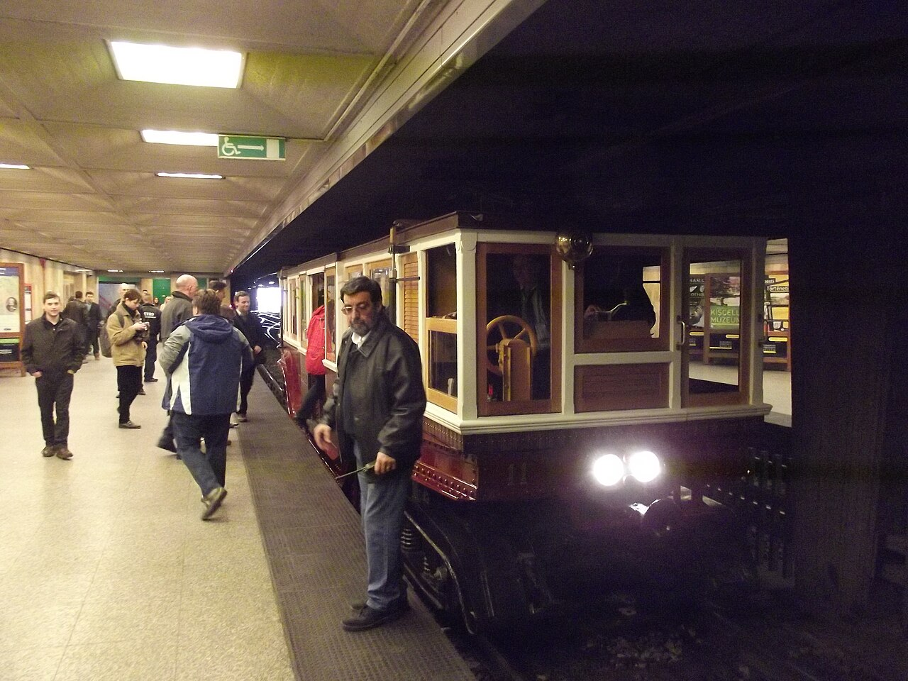

🗺️ System transportu publicznego

Budapeszt posiada jeden z najlepiej zorganizowanych systemów transportu publicznego
w Europie Środkowej. Dzięki niemu można łatwo i szybko poruszać się między głównymi
atrakcjami miasta – od Zamku Królewskiego, przez Most Łańcuchowy, aż po słynne
kąpieliska termalne.
Za cały system odpowiada organizacja BKK (Budapesti Közlekedési Központ),
która zarządza metrem, tramwajami, autobusami, trolejbusami i liniami nocnymi.
System jest w pełni zintegrowany – jeden bilet lub karta czasowa działa we
wszystkich środkach transportu.
Metro (Metró)
Budapest Metro to jeden z najstarszych systemów metra na świecie.
Linia M1, zwana „Földalatti", została uruchomiona już w 1896 roku
i jest wpisana na listę UNESCO jako pierwsze metro kontynentalne w Europie.
Dziś metro składa się z czterech linii:
- M1 (żółta): Vörösmarty tér – Mexikói út (historyczna trasa)
- M2 (czerwona): Keleti pályaudvar – Déli pályaudvar
- M3 (niebieska): Újpest-Városkapu – Kőbánya-Kispest
- M4 (zielona): Keleti pályaudvar – Kelenföld vasútállomás
Metro jest szybkie, punktualne i dobrze oznakowane – większość najważniejszych
atrakcji turystycznych znajduje się w pobliżu stacji.
Tramwaje (Villamos)
Budapeszt słynie z gęstej sieci tramwajowej. Szczególnie warta uwagi jest
linia nr 2, biegnąca wzdłuż lewego brzegu Dunaju po stronie
Pesztu – uznawana za jedną z najpiękniejszych tras tramwajowych na świecie.
Przejazd nią to prawdziwa atrakcja turystyczna – z okien można podziwiać
Parlament, Most Łańcuchowy i panoramę Budy.
Tramwaje w Budapeszcie są żółte, częste i bardzo dobrze skomunikowane.
Wiele z nich to nowoczesne, niskopodłogowe składy, co znacznie zwiększa
dostępność dla osób z niepełnosprawnościami, rodziców z wózkami i seniorów.
Autobusy i trolejbusy
Oprócz tramwajów i metra, miasto obsługuje rozbudowana sieć autobusów
i trolejbusów. Autobusy docierają tam, gdzie nie sięga metro – zwłaszcza
na obrzeża miasta i do dzielnic mieszkaniowych.
Linie nocne (oznaczone literą „E" lub numerem po godz. 23:00)
kursują przez całą noc, co pozwala bezpiecznie wrócić do hotelu po
wieczornym zwiedzaniu czy kąpieliskach termalnych.
🚕 Inne sposoby poruszania się
Taksówki i ridesharing
W Budapeszcie dostępne są popularne aplikacje jak Bolt i
Uber. Tradycyjne taksówki (żółte, oficjalnie licencjonowane)
można zamówić telefonicznie lub znaleźć na postoju. Zawsze sprawdzaj,
czy taksówkarz włączył licznik – chroni to przed nieuczciwymi cenami.
Rowery i hulajnogi
MOL Bubi to miejski system roweru publicznego – stacje
rozmieszczone są w całym centrum miasta. To świetna opcja na krótsze
trasy, szczególnie wzdłuż nabrzeża Dunaju.
W mieście działają też wypożyczalnie elektrycznych hulajnóg (Lime, Bird),
które pozwalają szybko przemieszczać się po centrum. Pamiętaj o
przestrzeganiu przepisów i korzystaniu z dostępnej infrastruktury rowerowej.
Kolejka linowa na Wzgórze Zamkowe
Budavári Sikló to historyczna kolejka linowa łącząca nabrzeże
Dunaju ze Wzgórzem Zamkowym. Uruchomiona w 1870 roku, jest jedną
z atrakcji turystycznych samą w sobie. Funkcjonuje codziennie i oferuje
zapierający dech widok na Most Łańcuchowy podczas wjazdu.